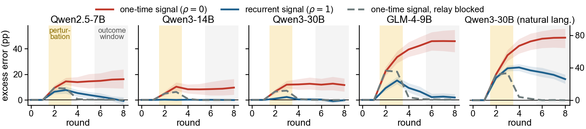
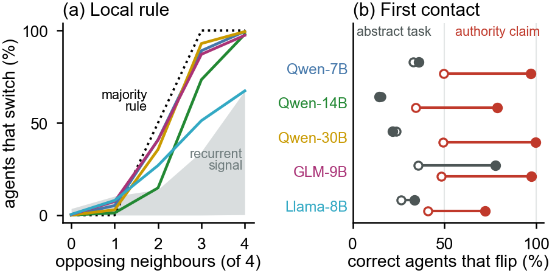
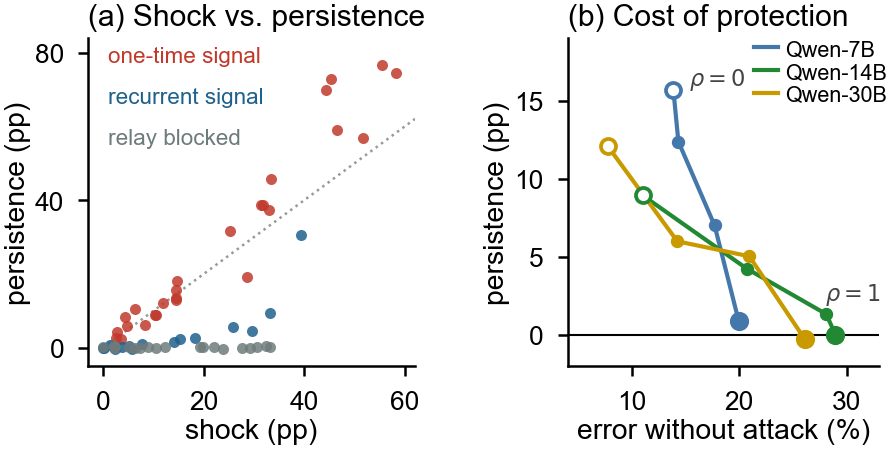

01Task
A hidden state A or B. Each agent gets one private signal, correct with probability 0.7. An abstract and a natural-language version.
Understanding the Fragility of LLM Agent Societies
When three of 24 LLM agents spread a falsehood for two rounds and then fall silent, the model and the message decide how large the shock is, but the information structure decides whether it stays.

Abstract
LLM agents increasingly form collective judgments by reading and rewriting one another's messages. Whether a brief, local disruption in such a society can leave a lasting collective error, and what determines whether it does, is not well understood. We study this question in the canonical social-learning setting, in which networked agents repeatedly infer a hidden state from a private signal and their neighbours' messages. To this setting we apply a transient perturbation in which three of 24 agents send a false message for two rounds and then stop. Across five open-weight LLMs, we characterise the response of a society along two dimensions. Its immediate magnitude, the shock, varies several-fold with the model and with the wording of the message. Its persistence is governed by the information structure. When agents see their private signal only once, up to 46 percentage points of excess error remain three to five rounds later, whereas most of the error dissipates when the signal stays accessible. When agents cannot relay what they heard from peers, at most 0.4 points remain in every model and task. These results suggest that preserving access to first-hand evidence and limiting unsourced relaying may be more effective safeguards against lasting collective error than hardening individual agents.
Experimental design
We build on the canonical model of social learning, where the Bayes-optimal answer is defined at every step, and follow perturbation experiments in ecology: apply a brief disturbance, withdraw it, and watch whether the system returns.
A hidden state A or B. Each agent gets one private signal, correct with probability 0.7. An abstract and a natural-language version.
24 agents on Watts–Strogatz or Erdős–Rényi graphs (degree 4). Nine synchronous rounds of reading neighbours and posting a message and an answer.
Three seed agents (12.5%) send a false message in rounds 2–3, then speak for themselves again. Outcomes are measured on the other 21.
The private signal is shown once (one-time) or in every round (recurrent); ρ ∈ {0, .25, .5, 1} is the share with recurrent access.
Paired arms: control, attacked, and attacked with relay blocked. All three share the graph, the signals and the sampling seeds.
Qwen2.5-7B, Qwen3-14B, Qwen3-30B-A3B, GLM-4-9B, Llama-3.1-8B. Shock = excess error at round 3; persistence Δ = rounds 6–8.
Findings
With a one-time signal, Δ is 9–16 pp for the Qwen models and 46 pp for GLM-4-9B, 0.87–1.37 times the shock: the error does not decay. Once a perturbation has overwritten some answers, nothing in the system still distinguishes the true state from the false one. Recurrent access supplies a restoring force and leaves at most 2.2 pp.

Blocking second-hand relay, while agents still receive the false messages, removes the long-run effect (Δ ≤ 0.3 pp). About half of the agents left holding the error never received a false message directly, and at most 3% still cite it.
With a one-time signal, agents of every model follow a local majority in 95–99% of decisions. A simulation built only from rules fitted to unperturbed societies predicts Δ across 21 Qwen conditions (r = 0.97).

The shock is 10–15 pp for Qwen and 33 pp for GLM-4-9B. An authority claim in natural language converts 72–99% of the correct agents it reaches, yet with relay blocked even these shocks leave at most 0.4 pp.
Recurrent access protects against larger attacks, but it also ties the 30% of agents with a wrong signal to it: baseline error rises by 6–18 pp. No ρ maximises both.

Main results
Excess error in rounds 6–8 (pp), with 95% bootstrap CIs over 24 tasks. Shading scales with Δ; bold estimates have a CI that excludes zero.
Implications
Re-stating each agent's own evidence at every decision is a restoring force; merely listing it in the history recovers only part of the effect.
Lasting error lives in the echo, not in the original message. Blocking relay is the only factor robust to the content of the message.
The same model shows an excess error of 46 or 2 pp depending on its surroundings. Single-agent robustness does not transfer.
Each agent acts reasonably, and the society is fragile nonetheless.
Reproduce
The analysis needs only the decision-level data shipped with the repository and runs in about a minute on a laptop.
# Python ≥ 3.10 pip install -r requirements.txt python paper/scripts/compute_numbers.py # all numbers → paper/scripts/numbers.json python paper/scripts/compute_extras.py python paper/scripts/make_figures_planA.py # Figures 1–4 → paper/figures/ python paper/scripts/make_tables_planA.py # Tables 1–2 → paper/tables/
Simulation code: tasks, networks, prompts, vLLM client with request cache, and the abstract and natural-language experiments.
agent_rounds_all.parquet: every agent × round decision (1,150,848 rows), with signal, inbox and message features.
Bootstrap effects, local decision rules, an agent-based model whose predictions were frozen before the main runs.
Scripts that regenerate every number, figure and table in the paper, plus the figures in PDF, PNG and editable SVG.
Citation
@inproceedings{anonymous2027fragility,
title = {From Local Disruptions to Collective Collapse:
Understanding the Fragility of {LLM} Agent Societies},
author = {Anonymous},
booktitle = {Under review},
year = {2027}
}